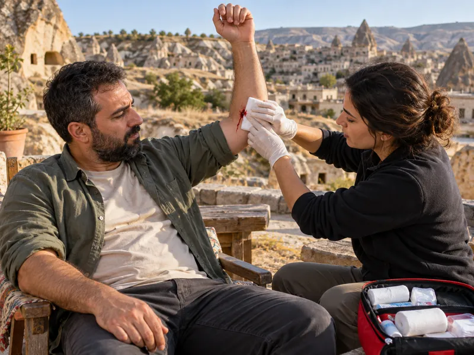

İlk YardımKonu 5 / 1056 çıkmış soru
Kanamalar ve şok
Atardamar, toplardamar ve kılcal damar kanamalarının ayırt edilmesini; dış kanamada doğrudan baskı, yükseltme, basınç noktaları ve turnike uygulamasını, iç kanama, burun ve kulak kanaması ile şokun belirtilerini ve şok pozisyonunu kapsar.

1Konu anlatımı
Akılda kalsın
- Atardamar kanamasında açık kırmızı kan kalp atımlarıyla uyumlu fışkırır ve en kısa sürede hayati tehlike oluşturur; toplardamar kanı koyu kırmızıdır ve yayılarak akar.
- Dış kanamada önce yaraya doğrudan baskı yapılır, kanayan bölge kalp seviyesinden yukarıda tutulur; sıcak uygulama kanamayı artırır.
- Bacak kanamasında basınç noktası kasık iç kısmı, omuz ve kol kanamasında köprücük kemiğinin iç kısmıdır; çökme kırığı olan bölgede basınç noktası kullanılmaz.
- Turnike yalnızca atardamarın geçtiği tek kemikli bölgelere uygulanır: kolda dirsek ile omuz arası, bacakta diz ile kalça arası.
- Burun kanamasında kişi oturtulup başı hafifçe öne eğilir, burun kanatları yaklaşık 5 dakika sıkılır; baş geriye atılmaz, sümkürtülmez.
- Başa darbe sonrası kulaktan gelen kan durdurulmaz, kulak tıkanmaz; kazazede kanayan kulak altta kalacak şekilde yan yatırılır.
- Şokta deri soğuk ve nemli, nabız hızlı ve zayıf, tansiyon düşüktür; kazazede sırtüstü yatırılıp bacakları yaklaşık 30 cm kaldırılır, ağızdan bir şey verilmez.
Kanama türleri
Kanama, damar bütünlüğünün bozulması sonucu kanın damar dışına çıkmasıdır. Kan vücut dışına akıyorsa dış kanama, vücut boşluklarına akıyorsa iç kanama söz konusudur. Dış kanamalar, kanayan damara göre üçe ayrılır:
| Tür | Kanın rengi | Akış şekli | Tehlike |
|---|---|---|---|
| Atardamar | Açık kırmızı (oksijenden zengin) | Kalp atımlarıyla uyumlu, kesik kesik fışkırır | En tehlikelisidir; kısa sürede çok kan kaybedilir |
| Toplardamar | Koyu kırmızı | Fışkırmadan, sürekli ve yayılarak akar | Orta düzeyde |
| Kılcal damar | Kırmızı | Yüzeyden yavaşça sızar | Azdır, çoğunlukla kendiliğinden durur |
Dış kanamada ilk yardım
Mümkünse eldiven kullanarak kendinizi koruyun ve 112'yi arayın. Ardından sırasıyla şu yöntemler uygulanır:
- Doğrudan baskı: Yaranın üzerine temiz bir bez ya da gazlı bezle bastırılır. Amaç, damarı sıkıştırarak kanın dışarı akmasını engellemek ve pıhtılaşmaya zaman kazandırmaktır. Bez kanla ıslanırsa kaldırılmaz, üzerine yenisi eklenir.
- Yükseltme: Kırık yoksa kanayan bölge kalp seviyesinden yukarıda tutulur; bölgeye giden kanın basıncı azalır. Kanayan bölgeyi kalp seviyesinden aşağıda tutmak kanamayı artırır.
- Basınç noktasına bası: Doğrudan baskı yetmezse, kanayan yere en yakın ve yaranın kalbe yakın tarafındaki basınç noktasında atardamar parmakla kemiğe doğru bastırılır.
- Turnike: Kol ve bacaktaki hayatı tehdit eden kanama başka yöntemle durdurulamıyorsa ya da uzuv kopmuşsa son çare olarak uygulanır.
Yaraya sıcak uygulama yapılmaz (damarları genişletip kanamayı artırır); pıhtılar yıkanıp temizlenmez, yaraya merhem sürülmez. Kanama varsa şoka karşı önlem alınır.
Basınç noktaları
| Kanayan bölge | Basınç uygulanacak yer |
|---|---|
| Bacak | Kasık kıvrımının iç kısmı (uyluk atardamarı) |
| Omuz ve kol | Köprücük kemiğinin iç kısmı (kemiğin arkasındaki çukur) |
| Kol | Koltuk altı ve kolun iç yüzü |
| Baş | Şakak |
| Yüz | Çene altı; şah damarı |
Boyundaki şah damarı baş ve yüze kan taşır; bu damara bası beynin kanlanmasını da azaltacağından yüz kanamalarında öncelikle yaraya doğrudan baskı uygulanır. Bölgede kırık, özellikle çökme kırığı varsa basınç noktası yöntemi uygulanmaz; kemiğe bastırmak kırık parçalarını oynatarak ek hasara yol açar.
Turnike kuralları
- Yalnızca atardamarın geçtiği tek kemikli bölgelere uygulanır: kolda dirsek ile omuz arası, bacakta diz ile kalça arası. İki kemikli bölgelerde (ön kol, diz altı) damar kemiklerin arasında kaldığından baskı etkili olmaz; eklem üzerine de uygulanmaz.
- Yaranın kalbe yakın tarafına, geniş bir bezle uygulanır; ip, tel gibi kesici malzeme kullanılmaz.
- Uygulama saati not edilir ve görünür bir yere yazılır; turnikenin üzeri örtülmez.
- Turnike ilk yardımcı tarafından gevşetilmez; sağlık ekibince çıkarılır.
İç kanama
Belirtiler: soğuk ve nemli deri, hızlı ve zayıf nabız gibi şok belirtileri; susama, bulantı-kusma, karında ağrı ve sertlik; ağız, burun veya kulaktan kan gelmesi. Kan kaybı arttıkça refleksler zayıflar, bilinç bulanıklaşır.
İlk yardım: 112 aranır; şok pozisyonu verilir, üstü örtülerek ısı kaybı önlenir ve yaşam bulguları sık aralıklarla izlenir. Ameliyat gerekebileceği ve kusma-boğulma riski bulunduğu için ağızdan hiçbir şey verilmez.
Burun ve kulak kanaması
Burun kanaması: Kişi oturtulur, başı hafifçe öne eğdirilir; burun kanatları baş ve işaret parmağı arasına alınarak yaklaşık 5 dakika sıkıca sıkılır. Burun üzerine soğuk uygulama yapılabilir. Kanama durmazsa sağlık kuruluşuna başvurulur.
Kulak kanaması: Başa alınan darbe sonrası kulaktan gelen kan kafa içi kanamanın belirtisi olabilir. Kanama durdurulmaya çalışılmaz, kulak tıkanmaz; ciddi kanamada kulak temiz bir bezle tıkamadan kapatılır. Kazazede sakinleştirilir; bilinci kapalıysa baş-boyun-gövde ekseni korunarak kanayan kulak altta kalacak şekilde yan yatırılır ve kanın dışarı akması sağlanır. 112 aranır.
Şok
Şok; kalp-damar sisteminin hayati organlara yeterli kan ulaştıramaması sonucu ani gelişen ve tansiyon düşüklüğü ile seyreden dolaşım yetmezliğidir. Ağır kanama, yanık, aşırı sıvı kaybı ve ağır yaralanmalardan sonra gelişebilir; müdahale edilmezse ölüme yol açar.
Belirtiler: soluk, soğuk ve nemli deri; hızlı ve zayıf nabız; hızlı ve yüzeysel solunum; kan basıncının düşmesi; susama, huzursuzluk ve bilinç bulanıklığı; vücut ısısının düşmesi.
İlk yardım (şok pozisyonu):
- Kazazede düz olarak sırtüstü yatırılır; baş yana çevrilip çene göğüsten uzaklaştırılarak soluk yolu açık tutulur.
- Bacakları yaklaşık 30 cm yukarı kaldırılır; böylece bacaklardaki kanın gövdeye dönüşü kolaylaşır ve beyne yeterince kan gitmesi sağlanır.
- Kanama durdurulur, üstü örtülerek ısı kaybı önlenir, ağızdan bir şey verilmez.
- Kazazede rastgele hareket ettirilmez; yaşam bulguları izlenir, 112 aranır.
Beyin kanaması ve kafa yaralanmalarında, göğüs ve akciğer yaralanmalarında ve bacak, kalça ya da omurga kırığı şüphesinde bacaklar kaldırılmaz.
2Bu konunun soruları
MEB sınavlarında bu konudan çıkmış 56 soru (7 tanesi en az üç sınavda soruldu). Her soruda doğru cevabı ve açıklamasını hemen görürsünüz.
Hangi sorular?
Sıralama